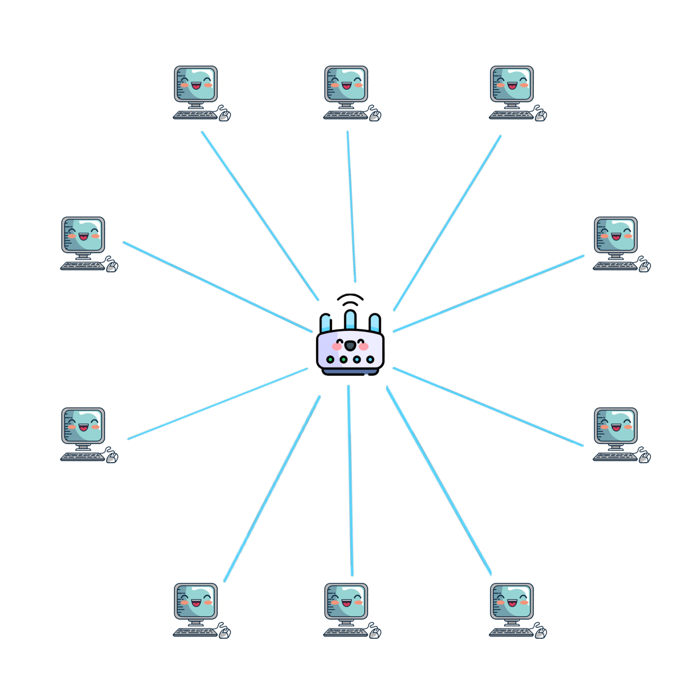

Si ha la rete 192.168.1.0/25
Bisogna dividerla in 10 sottoreti e ogni sottorete
deve avere 5 host

Quanti bit vanno
"presi" dall'host id per dividere la rete in 10
sottoreti?
Quanti indirizzi avrà ogni sottorete?
Quanti indirizzi
assegnabili avrà ogni sottorete?
Quante sottoreti sono libere?